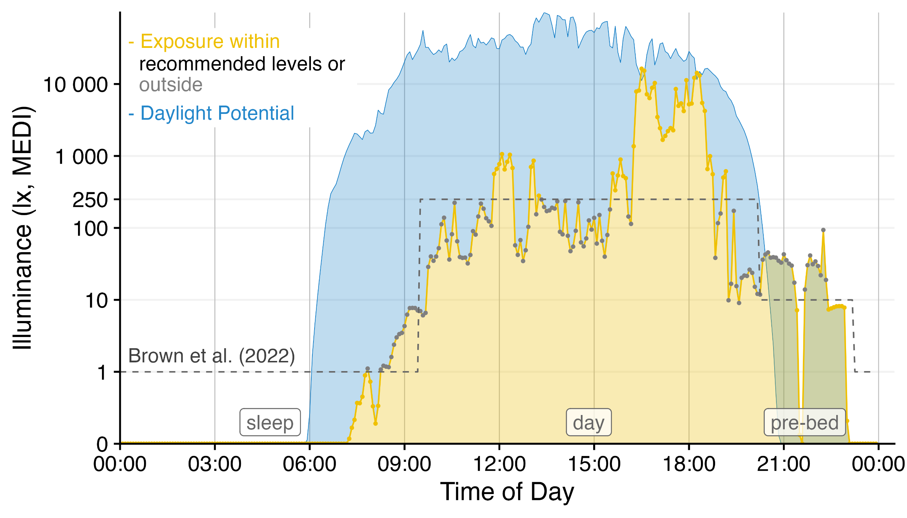
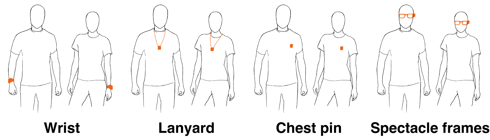

RDA Researcher Guide
This site will shortly host the Research Data Alliance (RDA) Research Guide. The Research Guide is authored by the Optical Radiation Exposure and Visual Experience Data Working Group. The site is built using Quarto, a scientific and technical publishing system.
DRAFT – NOT FOR DISTRIBUTION
Introduction
Exposure to the optical environment, sometimes called visual experience, fundamentally affects human physiology and behaviour at multiple time scales. Two examples of such effects that have received significant attention come from different research domains, but can be understood through a common retinally-referenced framework. The first concerns the ‘non-visual’ effect of light on human circadian and neuroendocrine physiology: The light-dark cycle synchronises the biological clock, and exposure to light at night suppresses melatonin production (Brown et al. 2022; Blume, Garbazza, and Spitschan 2019). The second concerns the potential effect of light exposure and visual experience on ocular development and specific myopia, in which time spent outdoors, and its associated visual experience, have been linked with ocular health outcomes (Dahlmann-Noor et al. 2025).

In typical laboratory studies, light exposure can be fixed and held constant, or modulated parametrically. Such artificial exposures are very much unlike the real-world exposures to the optical environment that people received through the day. As people move in and between spaces (indoors and outdoors) and move their trunks, heads and eyes, the exposure to the optical environment varies significantly (Webler et al. 2019), and is modulated by behaviour (Biller, Balakrishnan, and Spitschan 2024). As a consequence, understanding real-world exposure to link to real-world impacts requires real-world measurements, faciliated by wearable devices.
Starting in the 1980s (Okudaira, Kripke, and Webster 1983), technology to measure exposure to the optical environment has been developed and matured, with miniaturized illuminance sensors now (2025) being very common in consumer smartwatches. In research, several device and device types are available, which differ in their functionality, ranging from small pin-like devices measuring light exposure (Mohamed et al. 2021) to head-mounted multi-modal measurement devices capturing almost all relevant aspects of visual experience (Gibaldi et al. 2024). To make informed decisions about the properties of specific devices requires a careful ascertainment of their properties, and the specific trade-offs they entail.
Scope
The scope of this Researcher Guide is to provide a guide to using wearable devices measuring the optical environment. It is a living document and will be updated and versioned.
Researcher Guide
Selecting devices
The first step in any project examining visual experience and light exposure is the choice of a device. This involves understanding the properties of different wearable devices, and several trade-offs. A recent survey found >50 wearable devices differing in form and function (van Duijnhoven et al. 2025; with previous overviews in Hönekopp and Weigelt 2023; Danilenko et al. 2022), indicating the need to make informed choices.
Measurement capabilities and sensor characteristics
Spectral/photometric/α-opic metrics, sampling rate, uncertainty, cosine response, range, etc. (Spitschan et al. 2022)
Spectral sensitivity functions (CIE 2018; Lucas et al. 2014)
Advanced and additional modalities
Spatial resolution, movement tracking, UV/IR detection.
Manufacturer calibration
Devices designed to measure light exposure and other aspects of the optical environment should come with information from the manufacturer on the calibration procedures used to ensure high-quality measurements. Sometimes, information for one exemplary device is included in a spec sheet or datasheet. It is worth consulting with the manufacturer on any calibrations they perform and specifically clarifying whether device-level information is available.
The manufacturer may also recommend recalibrations of the devices at regular intervals. It is worth understanding the rationale for any such recalibrations (in particular if they come at a cost), as well as any recalibrations that researchers themselves can do.
Size, form, and design
The size, form and design of a wearable light logger are particularly important for the specific contexts in which it will be used. Devices that are too heavy, bulky or impractically shaped will likely not be of particular use in field studies on light exposure. The most common form factors are devices that are wrist-worn, lanyard-worn, attached with a clip, or attached to spectacle frames.

Different form factors are susceptible to different types of occlusions, so beyond participant comfort, a device’s dimensions and intended use case are also directly linked to data reliability. As of 2025, no specific device can be used all the time in all contexts and provide reliable information.
Common problems include:
Wrist-worn devices are susceptible to being occluded by sleeves, particularly in settings or cold weather seasons.
Lanyard-worn and clip-worn devices are susceptible to being occluded by jackets or other outer garments.
Devices attached to spectacle frames are impractical for long-term use in the real world.
Previous studies (Okudaira, Kripke, and Webster 1983; Jardim et al. 2011; Aarts et al. 2017; Bhandari, Mirhajianmoghadam, and Ostrin 2021; Wen et al. 2023; Mohammadian et al. 2024) have shown that while wrist-worn measurements are correlated with chest or head measurements, they are not related by a simple relationship. This follows from the fact that the wrist and eyes point in different directions in different planes.
Battery capacity
Battery life, charging cycles, power management.
Data storage
Storage capacity, retention, and privacy.
Raw data format and ease of use
Export formats, transfer speed, and syntactic structure.
Wear/non-wear and occlusion detection
Some devices may be able to detect whether they are being worn, either online, or after analysis using the manufacturer-provided software. For wrist-worn devices, this could be implemented through a capacitance sensor, or temperature sensor, or in conjunction with data from the IMU. Additionally, devices might be able to detect it is occluded.
When wear detection is not available from the device-inherent capabilities, it is recommended that researchers investigate concise methods for estimating wear/non-wear state, e.g. through additional questionnaires or using a data-driven approach.
Interaction with the device
Some devices contain event buttons, which, when pressed, insert time-stamped information into the data log. This functionality can be very useful for determining wear/non-wear state and specific events taking place for the participant. It is worth noting that as they are a user interaction, participants are not guaranteed to do it consistently.
Documentation
The quality of manufacturer documentation can vary significantly, and it is important to consult the manufacturer on its completeness. This includes, at a minimum:
- Sensor capabilities and calibration
- Full description of sensor capabilities, including calibration information
- Traceability of calibration (e.g., to national standards)
- Documentation of validation procedures (e.g., lab vs. field performance)
- Instructions for user-performed recalibration and required tools
- Expected lifespan and stability of sensor performance over time (e.g., sensor drift)
- Full description of sensor capabilities, including calibration information
- Environmental and operational conditions
- Environmental operating conditions (e.g., temperature, humidity, altitude)
- Known hardware/software limitations (e.g., maximum sampling rate, data loss risks)
- Information on error states or error modes that may be encountered during data collection
- Environmental operating conditions (e.g., temperature, humidity, altitude)
- Device behaviour and data processing
- Description of any onboard data processing, compression, or classification algorithms
- Details on how timestamps are generated and synchronized (e.g., internal clock behavior, drift)
- Firmware versioning and changelog history, especially for devices under active development
- Description of any onboard data processing, compression, or classification algorithms
- Data structure and output
- Full description of all data available from the device
- Clear explanation of file formats (CSV, JSON, binary, proprietary, etc.)
- Full description of all data available from the device
- Usage and deployment guidance
- Recommended positioning and usage instructions to ensure data validity
- Regulatory and support information
Software ecosystem
Features for annotation, tagging, and version control. (Zauner, Hartmeyer, and Spitschan 2025)
Validating devices
Once devices have been acquired, a key step prior to deployment in a scientific study is their validation.
Standardized validation procedures
General principles and methodology.
Cross-comparison with reference measurements
Using standard light sources.
Inter-device variability assessment
A simple and cheap method to characterise variability between devices is to place them under an overcast sky next to each other (Markvart, Hansen, and Christoffersen 2015).
Intra-device reliability assessment
Same-device repeatability.
Ease of calibration
Individual recalibration support.
Designing the protocol
Once devices are in hand, a key consideration is the design of a protocol.
Clarity on the research question and pre-registration
The research question, hypotheses, procedures, and methods need to be aligned in a tight way. In measuring visual experience and light exposure, this alignment becomes particularly important due to the changing and context-dependent nature of light. Measuring a single day of light exposure to draw conclusions about seasonal effects is methodologically flawed, neglecting intra- and inter-day fluctuations in weather, behaviour and exposures. For more robust measurements, typically, longer measurements are needed and include data from weekdays and weekends. Additionally, different work schedules (Daugaard et al. 2019; Price, Khazova, and Udovicic 2022) and seasons at specific latitudes (Cole et al. 1995; Graw et al. 1999; Thorne et al. 2009; Ulaganathan et al. 2019; Dunster et al. 2023) can lead to significant differences in exposure. At the same time, coverage needs to be balanced with participant burden.
It is important to clearly formulate the research question, hypotheses, procedures, and methods before the data collection. An additional step is to write a pre-registration detailing the protocol and analysis plans.
Participant burden vs. fidelity
Balancing precision with practicality.
Measurement capabilities matched to use case
Similar to how the research question, hypotheses, procedures, and methods need to be tightly aligned, the measurement capabilities of the wearable devices needs to be matched to the measurement context (indoors, outdoors). For example, a wearable devices might not be suited to measure light exposure below 10 lx. If the goal is to measure dynamics in nocturnal light exposure, the device would not produce robust information. Similarly, distance sensors operate differently in different conditions (depending on the sensor technology).
Measurement length and time intervals
Sampling strategy and battery considerations.
Inclusion of other data
Sleep, activity, and context. (Guidolin et al. 2024)
Participant reactivity and inadvertant behavioral modification
Different form factors and associated wearing locations could be susceptible to different ways that participants behave, a phenomenon similar to reactivity, in measurement leads to changes in the people being measured (French and Sutton 2010). For example, wearing a device attached to spectacle frames may not be very suitable for public environments, workplace, or specific recreational contexts. Consequently, participants may change their behaviour in response to the visibility, intrusiveness, or comfort of the device, leading to reactivity—i.e., modifications in naturalistic behaviour due to awareness of being monitored.
Such behavioural adaptations can include reduced social interaction, altered outdoor time, or avoidance of certain activities (e.g., sports, commuting via bicycle). These changes may introduce systematic biases in the collected data, particularly if the device form factor is not well tolerated across all settings or participants.
To probe for such biases, it may be advisable to include a questionnaire or single open-ended question after data collection asking whether they perceived any changes in their behaviour due to wearing the devices.
Collecting data
With the protocol final and registered, data collection commences. There are several aspects that need to be considered.
Briefing of participants
Participants should receive clear instructions on
- wearing the device, including suitable contexts and situations (related to the durability and IP rating of the device)
- handling the device when they take it off, including logging it
- charging the device regularly (if necessary)
To ensure that participants understand the instructions clearly, it is recommended that a short comprehension check be included after the briefing. This can be done by asking participants to repeat key instructions in their own words or having participants demonstrate how to wear, remove, and charge the device correctly. A printed or digital instruction sheet can be supplied for reference.
Additionally, if there are any known problems with the devices, these should be communicated to the participants.
Recurrent compliance checks
Throughout a measurement protocol, it could be helpful to implement regular checks to remind participants of key steps involved in the measurement, including charging. In case there is online access to the data, such as through clouds, it is possible to monitor light exposure instantaneously and remotely. This can bring several benefits, including the possibility of corrective action should a participant not comply to the study procedures.
Compliance related to usability can be probed and measured using specific questionnaires (Balajadia et al. 2023; Stefani et al. 2024).
Device settings
A time-stamped and versioned standard operating procedure (SOP) document can help ensure the reproducibility of device settings when there are multiple operators setting up devices for studies. A key component is to ensure the same parameters, but also other configuration flags being consistently used for logging.
Logging configuration, time sync, DST handling.
Storing and documenting data
As data is coming in, it is important to take care that the data are stored safely.
Documentation principles
A minimum approach includes the use of a README file that describes the data collected (Zielinski, Hodge, and Millar 2023).
Consistent file format
Non-proprietary standard formats.
Auxiliary data
Surveys, companion apps.
Standard directory structure
File organization.
Documentation of anomalies
Participant-reported issues.
Metadata
Metadata is data about data. Standardized documentation. (Spitschan et al. 2024)
Privacy aspects
For any biomedical data collection, privacy principles relevant to the local jurisdictions need to be upheld (e.g. HIPAA, GDPR, …). Careful consideration needs to be placed on which aspects of data contain personally identifiable information. It is not clear whether visual experience and light exposure, or time courses thereof, constitute personally identifiable information. More research needs to be done to understand the identifiability of people from their visual experience data.
Locale consistency
Date/time formats, decimal markers.
Recommended conventions for datetime
Best practices for timestamp handling. ISO 8601
Maintaining devices
Throughout data collection, devices need to be maintained.
Cleaning
Devices and attachment pieces such as lanyard should be cleaned between different participants. The manufacturer should provide instructions for this, to ensure that any cleaning instructions are consistent and compatible with the specific materials used.
Monitoring and correcting device drift
Detecting and recalibrating drift.
Analysing data
Following data collection, data are analysed.
Data cleaning and preprocessing
Due to non-wear at times of day at which specific activities occur (e.g., showering, contact sports, swimming, …), light exposure data may be missing systematically.
Non-wear, missing data, aggregation.
Exploration and exploratory visualization
Visual strategies for time series.
Merging data streams
Syncing sleep, activity, and light data.
Adding context to the time series
Chronotype, location data, etc.
Metric selection
Time-series of light exposure and visual experience data can be analysed using a series of metrics (Hartmeyer and Andersen 2023; Zauner, Hartmeyer, and Spitschan 2025). Importantly, there are no standard metrics for the analysis of light exposure data that have been robustly and reliably linked to outcome metrics. Given the lack of standard metrics, researchers must pay particular attention to analytic flexibility leading to inflated false positive rates in statistical analysis.
Duration vs. intensity metrics.
Special properties of light and visual experience data
Light exposure data spans a wide dynamic range, mirroring the differences in possible environmental exposures from the scotopic to the photopic range of light levels. This means that data are usually considered in a log10-transformed fashion.
An additional statistical property of 24-hour light exposure data is that it is heavily zero-inflated, due to the lack of light at night, or light below the measurement threshold of the device.
Implementation
It is recommended that analysis of visual experience data is implemented using programmatic tools, such as R, Python or MATLAB. LightLogR (Zauner, Hartmeyer, and Spitschan 2025) offers a powerful open-source tool available on CRAN for the analysis of light exposure and visual experience data.
Reporting data
Upon conclusion of the data collection, the next step is to report the data and associated results.
Methods section
For transparency and to ensure that others can replicate and reproduce the measurement protocol and study, it is key to document various aspects related to the measurement of visual experience and light exposure. At a minimum, it is recommended to include text on the following points:
- Device-related properties
- Manufacturer, brand and make of wearable device used
- Wearing location
- Sampling interval
- Measured quantities
- Calibration information on directional sensitivity, spectral sensitive, linearity and range properties
- Protocol-related properties
- Location and season of data collection
- Time zone and changes (e.g., daylight saving time)
- Wearing location
- Wearing duration
- Instructions given to the participant for wear context and non-wear behaviour
- Criteria for inclusion/exclusion based on wear time and compliance
- Use of prompts/reminders to ensure compliance
- Analysis-related properties
- Preprocessing of data, including outlier rejection, binning and smoothing
- Handling of partial or missing data
- Analysis routines and functions used
- Software and version used for analysis and open-source availability
Future work may formalise these recommendations in the form of a consensus checklist.
Discussion section
It is recommended that the Discussion section discloses various limitations arising from the choice of devices or protocols, such as the inability to measure visual experience in the near-corneal plane using wrist-worn devices. Additionally, the rationale for device selection, protocol design and analysis choices should be explained.
Metadata documentation
Thorough sharing practices.
Code sharing
The code used to analyse the data is not just a byproduct of the research process, but a result by itself. There are several reasons to make code available under an open source license:
- The work underlying the scientific results is shared sustainably for re-use and independent checking
- The researcher community can benefit from the availability of existing and citable code
Code can be shared as static files attached to the supplementary material of a published article, or on a repository, such as GitHub or Bitbucket. For GitHub, Zenodo offers an integration module such that when creating a release on GitHub, Zenodo creates a DOI, making the code citable.
Importantly, when sharing code, it is necessary to select a license under which the code is available. Common licenses include the MIT License, which is permissive with respect to commercial use, and the GPL License, which is more restricted. Choose a License can help making an informed decisions about software licenses.
Code reproducibility can be ensured through independent validation through CODECHECK (Nüst and Eglen 2021).
Data sharing
Ethical and practical aspects.
It is recommended that when researchers submit their ethics approval request, they already include the provision of sharing data in anonymized form. It can be very difficult to impractical to share data after the fact or seek re-approval from the participants.
Materials sharing
To ensure the reproducibility of research studies, it is recommended to share the materials used throughout the study, including any instruction sheets given to the participant, survey questions used, as well as debriefing documents. For any digital materials, such as forms served on a survey platform (such as REDCap), it is recommended, that the materials are provided in a format ingestible/importable by the platform
FAIR data
The FAIR principles state that data should be findable, accessible, interoperable and reusable, to make them easier to share (Wilkinson et al. 2016). Several points raised in this Researcher Guide are driven to ensure that visual experience and optical radiation data are FAIR, including standard file formats and documentation. Importantly, FAIR data guarantees that the collected data are used sustainably, and available well beyond the specific published research articles.
Data can be published as part of the supplementary material of journals. An alternative option is to add them as data packages to specific repositories, such as Zenodo or FigShare.